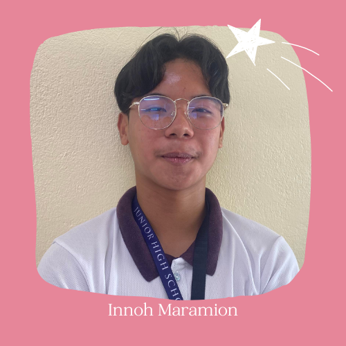

Bibliography
Badjao Community Docs Badjao Community Facebook PageMembers
 Back to Top
Back to Top
"Determining the Effectiveness of Orange Peel Compost for Increased Spring Onion Height and Number of Leaves"
How will the presence of the Orange Peel Compost affect the height and the number of leaves of the Spring Onion(Allium Chinense) Plant?
If we utilize Orange Peel Compost and place it on the soil, then the Spring Onion)Allium Chinense) Plant will grow taller and the number of leaves will increase.
The Badjao Community Institution primarily focuses on helping the Badjaos, a marginalized sector, who are unable to afford basic essentials like food. This experiment uses composting to perhaps find a solution to this urgent problem. In this study, we choose to use an orange peel compost as a soil conditioner and investigate how it impacts the height of a spring onion (Alium Chinense) to be used as an increase in food supply within the community. In order to maintain one’s health, spring onions provide nutrients like a high quantity of dietary fiber, vitamins, magnesium, potassium, iron, thiamin, riboflavin, phosphorus, and copper (Goyal S. 2021, June 1). It also offers us a variety of health advantages. It has a wealth of vitamins and minerals that help in the treatment of many diseases. It guards against ovarian cancer and other gastrointestinal issues while also assisting in lowering cholesterol and improving digestion (Soluta, N. 2022, February 28). Functional gastrointestinal problems, which are more common in women than males and impact 35% to 70% of people at some time in life, are reported by Harvard Health (2019, August 21). Furthermore, by adding orange peels to your compost, which are rich in nitrogen, you can boost the activity of microorganisms. This may also operate as a pesticide because bugs detest the potent citrus aroma. Additionally, they are entirely recyclable and pose no damage to the environment, reducing domestic waste (Blesch, W. 2021, October 7). In light of all of this, composting is incredibly valuable and advantageous for both communities and the environment. As previously noted, it is sustainable since it allows us to repurpose food waste and do away with chemical compost that causes more harm than good. Overall, because we already have the materials needed to compost at home, it is already possible. Therefore, composting will have a significant positive impact on our partner institution, the Badjao Community, since it will undoubtedly enhance the supply of vegetables available for the Badjaos who cannot afford such necessities, and perhaps enhance their well-being and standard of living.
Ruegie Batindaan is assigned to the SIP page, is the leader of the group, and is somewhat the one responsible for tasks that require video editing as she is skilled in that area. She assists in reminding everyone of the needed requirements to complete. She also tries her best to comply and accomplish necessary tasks. Overall, she contributes to the group’s success she assists Shiloh Rimando in her endeavors.